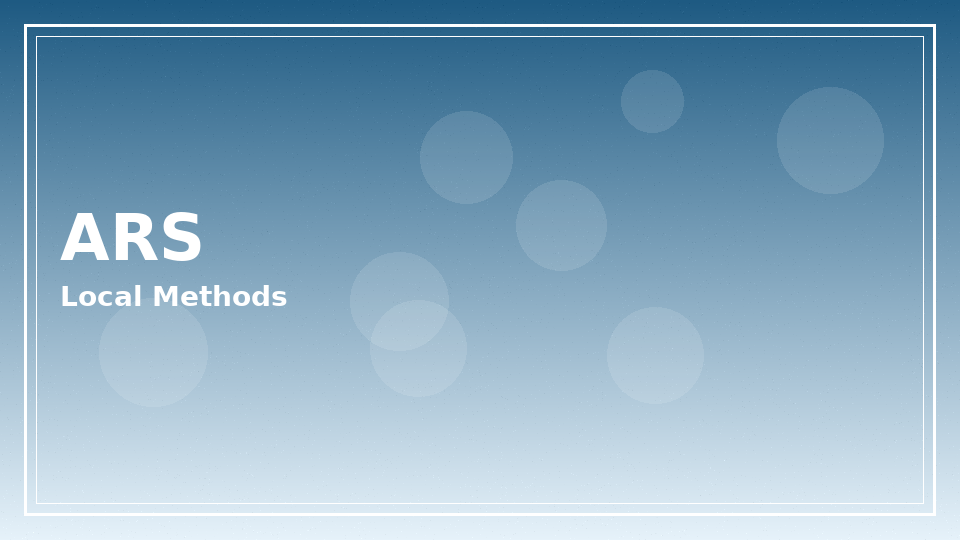

1win Argentina: what this local guide covers
1win Argentina searches usually mix three intents: whether the brand accepts players from the country, which payments appear in the cashier, and how football markets look for Liga Profesional nights. This page gathers practical orientation while pointing to our deeper legal article for regulatory nuance.
Ready to explore 1win argentina on the official operator site? Review the live offer details before you deposit.
18+ only. Bonus wagering requirements, minimum deposit amounts, offer expiry windows, and game contribution rates vary — see operator T&Cs on the signup page before claiming any promotion. Gambling involves risk; never stake more than you can afford to lose.
Sports focus for Argentine fans
Local derbies, Copa Argentina ties, and national team windows drive traffic spikes. Live betting liquidity and latency matter more than glossy banners. Compare main-line prices if you also watch odds elsewhere — shopping lines is rational; chasing losses after a red card is not.
- Check settlement rules for own-goals and abandoned matches.
- Confirm whether live markets suspend aggressively during VAR reviews.
- Keep a separate entertainment budget from household bills.
- See Aviator notes if you mix crash games at half-time.
Payments and documentation

| Item | Why prepare | Tip |
|---|---|---|
| Valid ID | KYC on withdrawals | Clear photos, matching name |
| Payment ownership | Anti-fraud checks | Use methods in your name |
| Address proof | Sometimes requested | Recent utility format |
| Selfie checks | Account integrity | Follow on-screen framing |
- Fund only what you can afford to lose after essentials.
- Record reference IDs for every deposit and cash-out.
- Ask support which rails are currently enabled rather than trusting outdated blogs.
- Beware of strangers offering ‘priority withdrawal’ for a fee.
Mobile-first habits in Argentine cities
Subte commutes and stadium queues push mobile use. Save the official app or bookmark, enable data saver modes carefully so live odds still refresh, and never share OTPs with tipsters.
| Context | Risk | Mitigation |
|---|---|---|
| Crowded Wi-Fi | Bet slip delays | Prefer carrier data |
| Low battery | Rushed decisions | Power bank or stop |
| Roaming trip | FX surprises | Check wallet currency |
Everyday scenarios for 1win Argentina readers
Imagine a Friday night in Córdoba with friends watching a Liga Profesional match on a living-room TV while two people casually check phones. Social settings raise the odds of mimicked stakes — someone else bets a flamboyant accumulator, and suddenly your envelope feels timid. Decide beforehand whether group nights are for watching only. Peer pressure is a budget leak.
Salary week can distort risk perception because the balance looks healthier for a few days. Schedule entertainment transfers on a weekday after bills clear, not at the ATM on payday night. Future-you paying utilities will not thank present-you for an impulsive live corners binge.
Currency display quirks appear when international wallets show a non-ARS unit. Convert carefully and watch for FX spreads on both deposit and withdrawal. A ‘small’ fee percentage on large turnover becomes real money.
Customer support language options help when translating settlement rules. Keep communication courteous and complete. Aggressive chat rarely accelerates KYC. Clear photos and matching names do.
Regional holidays and marathon football calendars create fatigue. Fatigue predicts mistakes: wrong fixtures, wrong markets, wrong stake zeros. If you cannot summarise why a bet exists in one sentence, skip it.
Our legal article remains essential reading because provincial realities differ. This 1win Argentina page focuses on practical culture and payments while refusing to overclaim a single nationwide answer.
Community myths worth retiring
Myth: private tip groups have insider referee information. Reality: most sell optimism. Myth: using a VPN always improves odds. Reality: VPNs can break banking checks and terms. Myth: cashing out early is always weak. Reality: cash-out is a pricing tool; sometimes useful, sometimes poor value — evaluate case by case.
Replace myths with checklists. You already saw payment and connectivity tables above. Revisit them monthly as rails change.
Extended notes for argentina readers
Additional context for the argentina guide: adults reading from Argentina benefit from slow decision-making, written budgets, and a refusal to treat marketing banners as advice. Take ten quiet minutes before any deposit to list why you are opening the cashier at all.
Keep a simple ledger for a fortnight. Write dates, amounts, and product types. Patterns appear quickly — late-night crash games, salary-day spikes, or live football overreactions. Once visible, patterns are easier to change with deposit caps and app timers.
If a session stops being fun, end it without negotiating with yourself. Entertainment that requires a pep talk to continue is no longer entertainment. Use the responsible gambling block links when unease turns into distress.
Cross-read related hub pages instead of searching random screenshots. Internal articles on casino, app, login, bonuses, Aviator, Argentina context, and legality exist to answer different questions without repeating the same paragraph everywhere.
Finally, remember affiliate disclosures: sponsored links may earn this site a commission. That commercial fact does not change maths, law, or your household budget. Your constraints stay yours.
Revisit these reminders monthly. Habits drift. A calendar note labelled ‘budget review’ is a small tool with outsized value for anyone who wants play to remain optional and calm.
Practical checklist readers can save
Save this checklist somewhere offline: confirm official domain, set a deposit ceiling, enable stronger authentication where available, read wagering contribution rules before claiming promotions, and schedule a hard stop time. Tape the stop time next to your monitor if needed.
When travelling between provinces or abroad, re-check whether access rules and payment rails still match your expectations. Do not assume yesterday’s cashier equals today’s. Screenshots age poorly.
Talk about money stress early. Friends, family, or free support organisations can interrupt spirals that private shame extends. Seeking help is a strength move, not a spectacle.
Keep software updated on phones and laptops. Many account takeovers start with outdated browsers or malicious lookalike apps rather than clever password guesses alone.
Use separate browser profiles for everyday browsing and for any gambling logins if that mental separation helps you notice when you are about to break a limit.
Review open bets and unfinished bonus trackers before bed. Unfinished mental loops cause night-time checking. Closing loops deliberately protects sleep.
If you disagree with a settlement, gather evidence calmly and contact official support with timestamps. Parallel raging on social networks rarely improves outcomes and sometimes spreads personal data you meant to keep private.
Local context, legality, and next reads
Online gambling rules in Argentina involve national and provincial layers that evolve. Do not treat an affiliate summary as legal advice. Start with is 1win legal in Argentina, then decide whether participating fits your situation.
- Verify operator disclosures yourself.
- Set deposit limits early.
- Prefer transparent odds over flashy boosts you do not understand.
- Stop if play stops being entertainment.
| Period | Player interest pattern | Self-care note |
|---|---|---|
| Clásico weeks | Higher live betting volume | Pre-set loss caps |
| World Cup windows | Long sessions | Schedule breaks |
| Salary weekdays | Deposit spikes | Separate bills first |
18+. This site publishes informational content for adults only. Gambling can be addictive — set limits, take breaks, and seek help if play stops being fun.
- Support and education: BeGambleAware
- Advice and treatment pathways: GamCare
If you feel play is becoming stressful, pause and contact free support resources. Nothing on this page is financial advice.